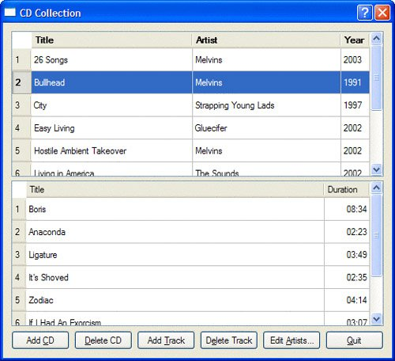
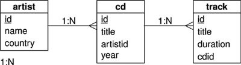
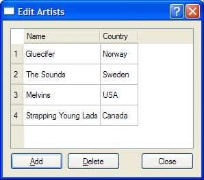

Presenting Data in Tabular FormIn many cases, it is simplest to present users with a tabular view of a data set. In this section and the following section, we present a simple CD Collection application that uses QSqlTableModel and its subclass QSqlRelationalTableModel to let users view and interact with data stored in a database. The main form shows a masterdetail view of CDs and the tracks on the currently selected CD, as shown in Figure 13.1. Figure 13.1. The CD Collection applicationThe application uses three tables, defined as follows:
CREATE TABLE artist (
id INTEGER PRIMARY KEY,
name VARCHAR(40) NOT NULL,
country VARCHAR(40));
CREATE TABLE cd (
id INTEGER PRIMARY KEY,
title VARCHAR(40) NOT NULL,
artistid INTEGER NOT NULL,
year INTEGER NOT NULL,
FOREIGN KEY (artistid) REFERENCES artist);
CREATE TABLE track (
id INTEGER PRIMARY KEY,
title VARCHAR(40) NOT NULL,
duration INTEGER NOT NULL,
cdid INTEGER NOT NULL,
FOREIGN KEY (cdid) REFERENCES cd);
Some databases don't support foreign keys. For those, we must remove the FOREIGN KEY clauses. The example will still work, but the database will not enforce referential integrity. Figure 13.2. The CD Collection application's tables In this section, we will write a dialog that allows the user to edit a list of artists using a simple tabular form. The user can insert or delete artists using the form's buttons. Updates can be applied directly, simply by editing cell text. Changes are applied to the database when the user presses Enter or navigates to another record. Figure 13.3. The ArtistForm dialog Here's the class definition for the ArtistForm dialog:
class ArtistForm : public QDialog
{
Q_OBJECT
public:
ArtistForm(const QString &name, QWidget *parent = 0);
private slots:
void addArtist();
void deleteArtist();
void beforeInsertArtist(QSqlRecord &record);
private:
enum {
Artist_Id = 0,
Artist_Name = 1,
Artist_Country = 2
};
QSqlTableModel *model;
QTableView *tableView;
QPushButton *addButton;
QPushButton *deleteButton;
QPushButton *closeButton;
};
The constructor is very similar to one that would be used to create a form based on a non-SQL model:
ArtistForm::ArtistForm(const QString &name, QWidget *parent)
: QDialog(parent)
{
model = new QSqlTableModel(this);
model->setTable("artist");
model->setSort(Artist_Name, Qt::AscendingOrder);
model->setHeaderData(Artist_Name, Qt::Horizontal, tr("Name"));
model->setHeaderData(Artist_Country, Qt::Horizontal, tr("Country"));
model->select();
connect(model, SIGNAL(beforeInsert(QSqlRecord &)),
this, SLOT(beforeInsertArtist(QSqlRecord &)));
tableView = new QTableView;
tableView->setModel(model);
tableView->setColumnHidden(Artist_Id, true);
tableView->setSelectionBehavior(QAbstractItemView::SelectRows);
tableView->resizeColumnsToContents();
for (int row = 0; row < model->rowCount(); ++row) {
QSqlRecord record = model->record(row);
if (record.value(Artist_Name).toString() == name) {
tableView->selectRow(row);
break;
}
}
...
}
We begin the constructor by creating a QSqlTableModel. We pass this as parent to give ownership to the form. We have chosen to sort by column 1 (specified by the constant Artist_Name), which corresponds to the name field. If we did not specify column headers, the field names would be used. We prefer to name them ourselves to ensure that they are properly capitalized and internationalized. Next, we create a QTableView to visualize the model. We hide the id field and set the column widths to accommodate their text without needing to show ellipses. The ArtistForm constructor takes the name of the artist that should be selected when the dialog pops up. We iterate through the artist table's records and select the specified artist. The rest of the constructor's code is used to create and connect the buttons and to lay out the child widgets.
void ArtistForm::addArtist()
{
int row = model->rowCount();
model->insertRow(row);
QModelIndex index = model->index(row, Artist_Name);
tableView->setCurrentIndex(index);
tableView->edit(index);
}
To add a new artist, we insert a single blank row at the bottom of the QTable-View. Now the user can enter a new artist's name and country. If the user confirms the insertion by pressing Enter, the beforeInsert() signal is emitted and then the new record is inserted into the database.
void ArtistForm::beforeInsertArtist(QSqlRecord &record)
{
record.setValue("id", generateId("artist"));
}
In the constructor, we connected the model's beforeInsert() signal to this slot. We are passed a non-const reference to the record just before it is inserted into the database. At this point, we populate its id field. Since we will need generateId() a few times, we define it inline in a header file and include it each time we need it. Here's a quick (and inefficient) way of implementing it:
inline int generateId(const QString &table)
{
QSqlQuery query;
query.exec("SELECT MAX(id) FROM " + table);
int id = 0;
if (query.next())
id = query.value(0).toInt() + 1;
return id;
}
The generateId() function can only be guaranteed to work correctly if it is executed within the context of the same transaction as the corresponding INSERT statement. Some databases support auto-generated fields, and it is usually far better to use the database-specific support for this operation. The last possibility the ArtistForm dialog offers is deletion. Rather than performing cascading deletions (covered shortly), we have chosen to only permit deletions of artists who have no CDs in the collection.
void ArtistForm::deleteArtist()
{
tableView->setFocus();
QModelIndex index = tableView->currentIndex();
if (!index.isValid())
return;
QSqlRecord record = model->record(index.row());
QSqlTableModel cdModel;
cdModel.setTable("cd");
cdModel.setFilter("artistid = " + record.value("id").toString());
cdModel.select();
if (cdModel.rowCount() == 0) {
model->removeRow(tableView->currentIndex().row());
} else {
QMessageBox::information(this,
tr("Delete Artist"),
tr("Cannot delete %1 because there are CDs associated "
"with this artist in the collection.")
.arg(record.value("name").toString()));
}
}
If there is a record selected, we check to see if the artist has any CDs, and if they don't, we delete them immediately. Otherwise, we pop up a message box explaining why the deletion was not performed. Strictly speaking, we should have used a transaction, because as the code stands, it is possible for a CD to have its artist set to the one we are deleting in-between the cdModel.select() and model->removeRow() calls. We will show a transaction in the next section. |